A Two-Stage Machine-Learning Framework for Extrapolating Bike Volume and Exposure-Based Accident Risk Prediction
Research Overview
Raw accident counts are a misleading measure of cycling danger. A busy junction will naturally see more crashes than a quiet side street — not because it's proportionally more dangerous, but simply because more cyclists pass through it. To identify true hotspots of risk, we need to normalise crash counts against cycling volume (exposure).
The challenge: permanent bicycle counters cover only a small fraction of the road network. This thesis develops a machine-learning pipeline to fill that gap — extrapolating volume from 28 counting stations across all of Camden, then using those estimates to compute per-cyclist accident risk at fine spatial resolution (250 × 250 m grid cells).
The result is weekly, spatially granular risk maps that reveal low-volume, high-risk hotspots invisible to raw crash count analysis — exactly the kind of insight planners need to move toward Vision Zero.
Methodology
The framework decouples the problem into two sequential supervised learning tasks:
A Random Forest regressor is trained on 2022 daily counts from 28 TfL camera-based counters. Over 130 features describe each 250 × 250 m grid cell across the borough.
Stage 1 predictions serve as exposure. Two models are trained on weekly grid-cell data:
Classification — did any accident occur this week? (0/1)
Regression — how many accidents per 1,000 predicted cyclists?
Both use temporal holdout validation to prevent data leakage.
All models are evaluated using temporal holdout splits — training on earlier weeks, testing on later weeks — to respect the natural ordering of time-series data and avoid leakage. Seven different splits are tested to assess robustness.
Model Performance
| Model | R² | SMAPE | MAE |
|---|---|---|---|
| 🏆 Random Forest | 0.82 | 0.10% | 0.005 |
| XGBoost | 0.81 | 199% | 0.005 |
| Gradient Boosting | 0.78 | 199% | 0.006 |
| Linear Regression | −0.11 | 200% | 0.049 |
Random Forest dominates on SMAPE because the target is highly zero-inflated — other tree-based methods collapse on this metric while RF's ensemble averaging handles sparsity more gracefully.
| Task | Split | F1 | Precision | Recall | R² | Non-zero SMAPE |
|---|---|---|---|---|---|---|
| Classification | 2 (weeks 27–52) | 0.99 | 0.99 | 0.99 | — | — |
| Regression | 2 (weeks 27–52) | — | — | — | 0.84 | 24% |
| Regression | 3 (weeks 40–52) | — | — | — | 0.86 | 27% |
| Metric | Value |
|---|---|
| Global SMAPE | 21.6% |
| Mean SMAPE per grid cell | 10.4% |
| Variance explained (held-out locations) | >85% |
| Count stations used for training | 28 |
| % of area covered by permanent counters | ~10% |
Visualisations
Side-by-side comparison of predicted accident risk and observed accidents per grid cell, week 36 and week 40.
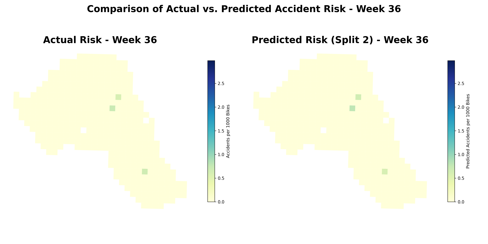
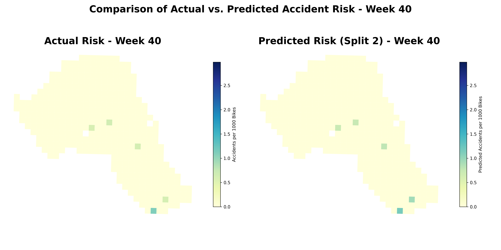
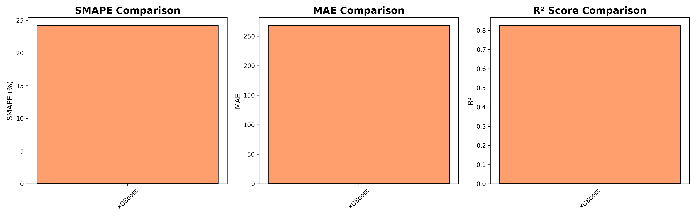
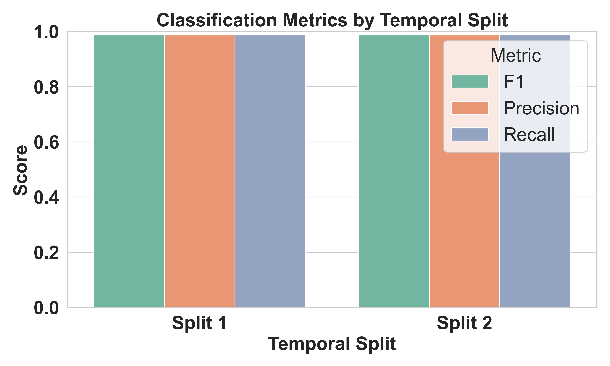
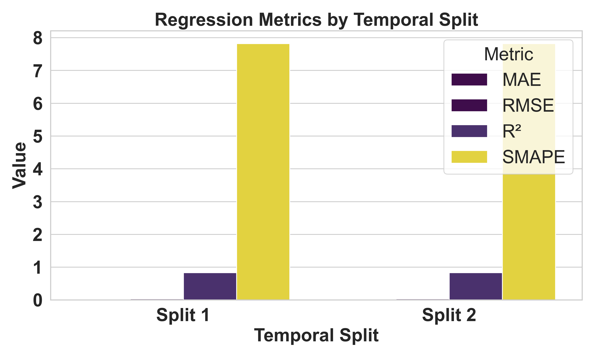
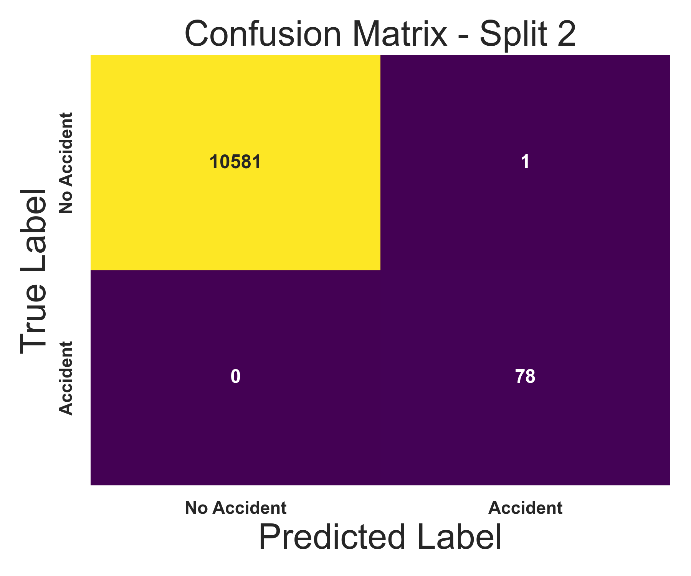
SHAP values explain model predictions — revealing which features drive accident risk up or down, and by how much.
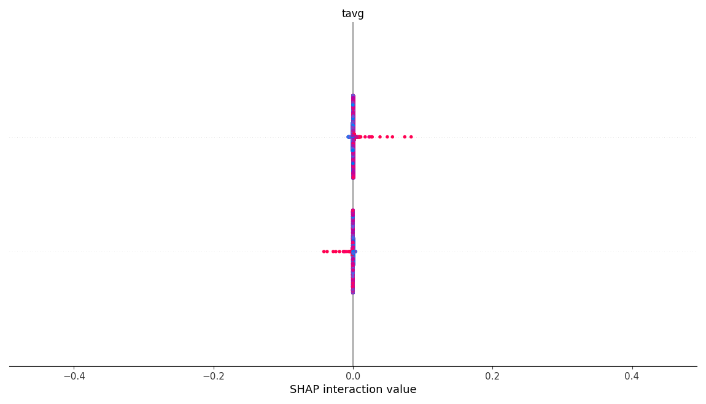
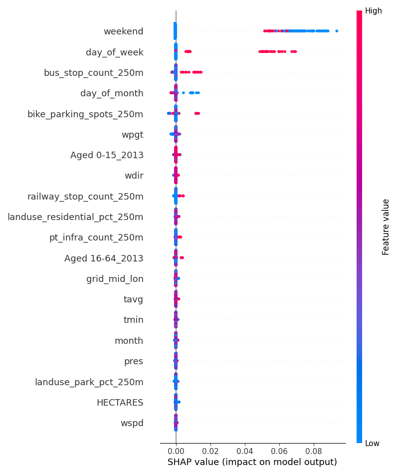
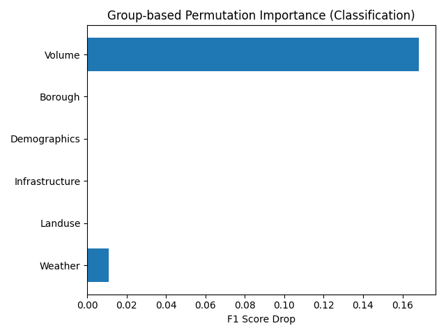
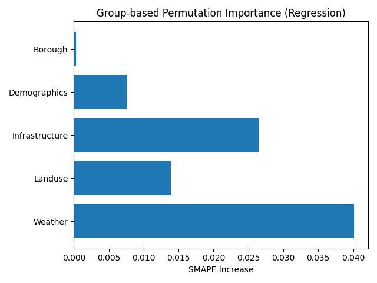
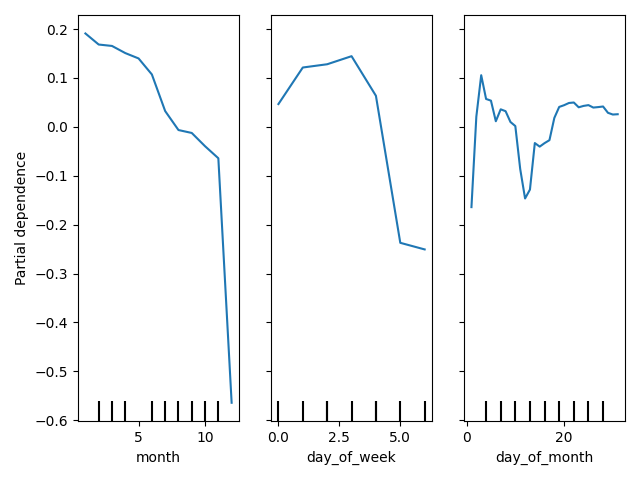
Data & Engineering
Over 130 features are engineered at 250 m and 500 m buffer radii around each grid cell, drawn from open data sources.
Avg/min/max temperature, wind speed & direction, pressure (Meteostat)
Grid centroid, week of year, day of week, season, public holidays
% residential, commercial, retail, park, forest, water, construction … (OpenStreetMap)
Bike lane length/density, dedicated cycleways, contra-flow lanes, bike parking
Bus stops, rail stops, traffic signals, pedestrian crossings, road intersections
Population density, age bands (2013 & 2023) — ONS Census
Shops, schools/universities, hospitals, hotels within 250 m & 500 m buffers
Distance to city centre, maximum road speed limit
Bonus Finding
A log–log OLS regression between total accidents and predicted cycling volume produces an elasticity below 1 — meaning that as cycling volume increases, per-cyclist risk decreases. This provides modest empirical support for the well-known "Safety in Numbers" hypothesis (Jacobsen, 2003): more cyclists on the road correlates with lower individual risk, potentially through increased driver awareness and infrastructure investment.
This result aligns with findings from Stockholm, Copenhagen, and other cities that have seen accident rates fall as cycling mode share grows — suggesting that policies promoting cycling uptake may have a positive safety feedback effect.
Implications
The framework demonstrates that reliable volume estimates can be produced even when permanent count data cover just 10% of an area. This enables planners to generate exposure-adjusted risk maps at low cost.
Use relative risk maps to identify high-risk, low-volume grid cells — the dangerous spots raw accident counts miss — and prioritise safety interventions there.
Even a modest expansion from 28 to ~50 strategically placed counters could dramatically improve volume model accuracy in underrepresented areas.
Weekly risk maps could be published as open data for researchers, insurers, and the public — enabling data-informed route choices and advocacy.
Exposure-adjusted metrics should replace raw crash counts in official safety monitoring, aligning with Vision Zero's goal of eliminating road deaths and serious injuries.
Honest Science
Acknowledging these openly is part of good research practice — and shows a reviewer that you understand your own work deeply.
Static features (land use, infrastructure, demographics) don't change week to week, so the model largely learns which grid cells are structurally prone to accidents rather than when accidents will occur. A stricter test would hold out entire geographic areas unseen during training. The result is still useful for identifying high-risk locations, but is not a true weekly forecast.
The StandardScaler for each counting station is computed on all of that station's historical data before Leave-One-Grid-Out splits. In real deployment on a new, unseen location you'd have no historical data and would need the global fallback scaler. The reported Stage 1 performance is therefore marginally optimistic.
When both true and predicted values are near zero (the majority of grid-week pairs), SMAPE collapses to ~0, artificially deflating the global metric. This explains why RF gets SMAPE = 0.10% while XGBoost gets 199% — it's not a meaningful performance gap. The non-zero SMAPE (~24–27%) is the more honest metric for the regression model.